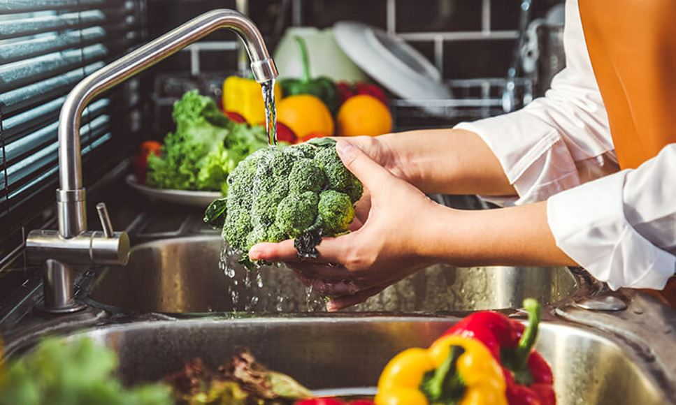
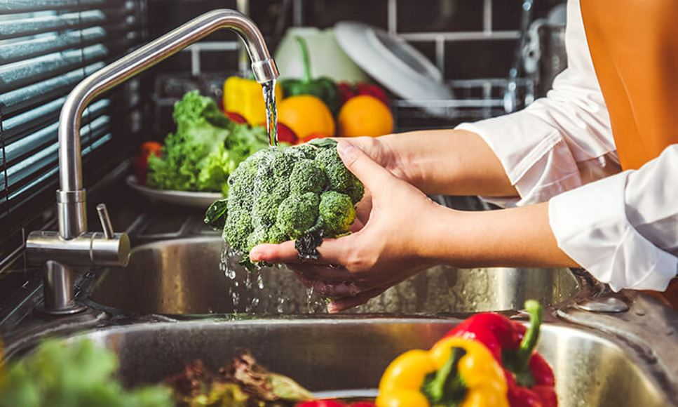

Welcome to Our Innovation in Food Safety
Our system ensures the highest standards of food safety by monitoring kitchen operations, detecting anomalies, and auditing transactions.
Ensuring Food Safety and Hygiene through Technology
Our system ensures the highest standards of food safety by monitoring kitchen operations, detecting anomalies, and auditing transactions.
 
